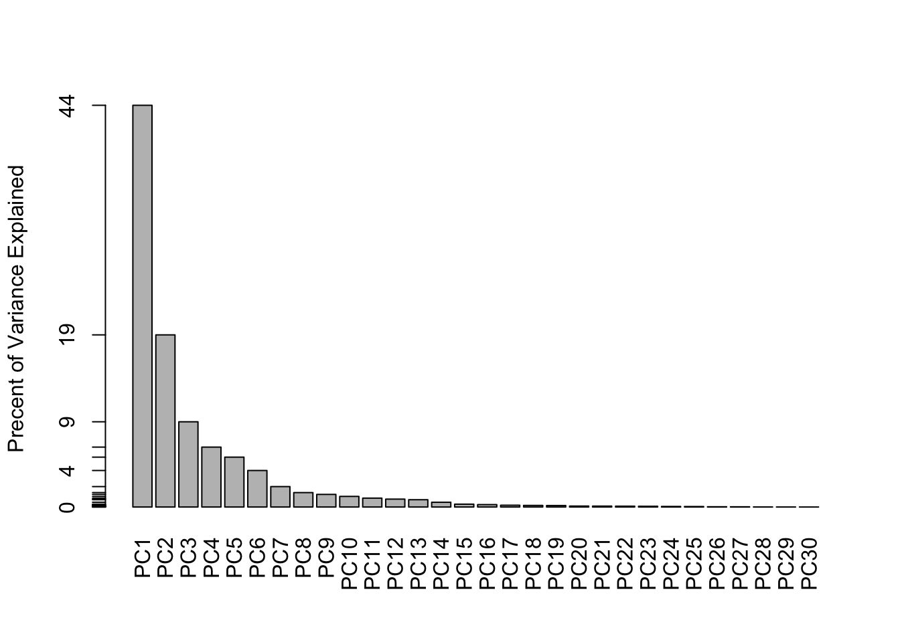

# Save your input data file into your Project directory
fna.data <- "WisconsinCancer.csv"
# Complete the following code to input the data and store as wisc.df
wisc.df <- read.csv(fna.data, row.names=1)mini-project
wisc.df <- read.csv("WisconsinCancer.csv") head(wisc.df) ## The id and diagnosis columns will not be used for most of the following steps id diagnosis radius_mean texture_mean perimeter_mean area_mean
1 842302 M 17.99 10.38 122.80 1001.0
2 842517 M 20.57 17.77 132.90 1326.0
3 84300903 M 19.69 21.25 130.00 1203.0
4 84348301 M 11.42 20.38 77.58 386.1
5 84358402 M 20.29 14.34 135.10 1297.0
6 843786 M 12.45 15.70 82.57 477.1
smoothness_mean compactness_mean concavity_mean concave.points_mean
1 0.11840 0.27760 0.3001 0.14710
2 0.08474 0.07864 0.0869 0.07017
3 0.10960 0.15990 0.1974 0.12790
4 0.14250 0.28390 0.2414 0.10520
5 0.10030 0.13280 0.1980 0.10430
6 0.12780 0.17000 0.1578 0.08089
symmetry_mean fractal_dimension_mean radius_se texture_se perimeter_se
1 0.2419 0.07871 1.0950 0.9053 8.589
2 0.1812 0.05667 0.5435 0.7339 3.398
3 0.2069 0.05999 0.7456 0.7869 4.585
4 0.2597 0.09744 0.4956 1.1560 3.445
5 0.1809 0.05883 0.7572 0.7813 5.438
6 0.2087 0.07613 0.3345 0.8902 2.217
area_se smoothness_se compactness_se concavity_se concave.points_se
1 153.40 0.006399 0.04904 0.05373 0.01587
2 74.08 0.005225 0.01308 0.01860 0.01340
3 94.03 0.006150 0.04006 0.03832 0.02058
4 27.23 0.009110 0.07458 0.05661 0.01867
5 94.44 0.011490 0.02461 0.05688 0.01885
6 27.19 0.007510 0.03345 0.03672 0.01137
symmetry_se fractal_dimension_se radius_worst texture_worst perimeter_worst
1 0.03003 0.006193 25.38 17.33 184.60
2 0.01389 0.003532 24.99 23.41 158.80
3 0.02250 0.004571 23.57 25.53 152.50
4 0.05963 0.009208 14.91 26.50 98.87
5 0.01756 0.005115 22.54 16.67 152.20
6 0.02165 0.005082 15.47 23.75 103.40
area_worst smoothness_worst compactness_worst concavity_worst
1 2019.0 0.1622 0.6656 0.7119
2 1956.0 0.1238 0.1866 0.2416
3 1709.0 0.1444 0.4245 0.4504
4 567.7 0.2098 0.8663 0.6869
5 1575.0 0.1374 0.2050 0.4000
6 741.6 0.1791 0.5249 0.5355
concave.points_worst symmetry_worst fractal_dimension_worst
1 0.2654 0.4601 0.11890
2 0.1860 0.2750 0.08902
3 0.2430 0.3613 0.08758
4 0.2575 0.6638 0.17300
5 0.1625 0.2364 0.07678
6 0.1741 0.3985 0.12440# We can use -1 here to remove the first column
wisc.data <- wisc.df[,-1]
head(wisc.data) diagnosis radius_mean texture_mean perimeter_mean area_mean smoothness_mean
1 M 17.99 10.38 122.80 1001.0 0.11840
2 M 20.57 17.77 132.90 1326.0 0.08474
3 M 19.69 21.25 130.00 1203.0 0.10960
4 M 11.42 20.38 77.58 386.1 0.14250
5 M 20.29 14.34 135.10 1297.0 0.10030
6 M 12.45 15.70 82.57 477.1 0.12780
compactness_mean concavity_mean concave.points_mean symmetry_mean
1 0.27760 0.3001 0.14710 0.2419
2 0.07864 0.0869 0.07017 0.1812
3 0.15990 0.1974 0.12790 0.2069
4 0.28390 0.2414 0.10520 0.2597
5 0.13280 0.1980 0.10430 0.1809
6 0.17000 0.1578 0.08089 0.2087
fractal_dimension_mean radius_se texture_se perimeter_se area_se
1 0.07871 1.0950 0.9053 8.589 153.40
2 0.05667 0.5435 0.7339 3.398 74.08
3 0.05999 0.7456 0.7869 4.585 94.03
4 0.09744 0.4956 1.1560 3.445 27.23
5 0.05883 0.7572 0.7813 5.438 94.44
6 0.07613 0.3345 0.8902 2.217 27.19
smoothness_se compactness_se concavity_se concave.points_se symmetry_se
1 0.006399 0.04904 0.05373 0.01587 0.03003
2 0.005225 0.01308 0.01860 0.01340 0.01389
3 0.006150 0.04006 0.03832 0.02058 0.02250
4 0.009110 0.07458 0.05661 0.01867 0.05963
5 0.011490 0.02461 0.05688 0.01885 0.01756
6 0.007510 0.03345 0.03672 0.01137 0.02165
fractal_dimension_se radius_worst texture_worst perimeter_worst area_worst
1 0.006193 25.38 17.33 184.60 2019.0
2 0.003532 24.99 23.41 158.80 1956.0
3 0.004571 23.57 25.53 152.50 1709.0
4 0.009208 14.91 26.50 98.87 567.7
5 0.005115 22.54 16.67 152.20 1575.0
6 0.005082 15.47 23.75 103.40 741.6
smoothness_worst compactness_worst concavity_worst concave.points_worst
1 0.1622 0.6656 0.7119 0.2654
2 0.1238 0.1866 0.2416 0.1860
3 0.1444 0.4245 0.4504 0.2430
4 0.2098 0.8663 0.6869 0.2575
5 0.1374 0.2050 0.4000 0.1625
6 0.1791 0.5249 0.5355 0.1741
symmetry_worst fractal_dimension_worst
1 0.4601 0.11890
2 0.2750 0.08902
3 0.3613 0.08758
4 0.6638 0.17300
5 0.2364 0.07678
6 0.3985 0.12440# Create diagnosis vector for later
diagnosis <- as.factor(wisc.df$diagnosis) ## Factors are for categorical data and modeling, also for plotting.
head(diagnosis)[1] M M M M M M
Levels: B MQ1 How many rows/ subjects?
nrow(wisc.df)[1] 569Q. How many M (cancer) B (healthy) patients?
table(diagnosis)diagnosis
B M
357 212 Q3. How many variables/features in the data are suffixed with _mean?
colnames(wisc.data) ## We could use `colnames` and count manually but it could be time consuming [1] "diagnosis" "radius_mean"
[3] "texture_mean" "perimeter_mean"
[5] "area_mean" "smoothness_mean"
[7] "compactness_mean" "concavity_mean"
[9] "concave.points_mean" "symmetry_mean"
[11] "fractal_dimension_mean" "radius_se"
[13] "texture_se" "perimeter_se"
[15] "area_se" "smoothness_se"
[17] "compactness_se" "concavity_se"
[19] "concave.points_se" "symmetry_se"
[21] "fractal_dimension_se" "radius_worst"
[23] "texture_worst" "perimeter_worst"
[25] "area_worst" "smoothness_worst"
[27] "compactness_worst" "concavity_worst"
[29] "concave.points_worst" "symmetry_worst"
[31] "fractal_dimension_worst"Or we could use grep() ## To finding Pattern Matching
length(grep("_mean", colnames(wisc.data), value = T))[1] 10Principal Component Analysis
# Check column means and standard deviations to determine if the data should be scaled.
colMeans(wisc.data[,2:31]) radius_mean texture_mean perimeter_mean
1.412729e+01 1.928965e+01 9.196903e+01
area_mean smoothness_mean compactness_mean
6.548891e+02 9.636028e-02 1.043410e-01
concavity_mean concave.points_mean symmetry_mean
8.879932e-02 4.891915e-02 1.811619e-01
fractal_dimension_mean radius_se texture_se
6.279761e-02 4.051721e-01 1.216853e+00
perimeter_se area_se smoothness_se
2.866059e+00 4.033708e+01 7.040979e-03
compactness_se concavity_se concave.points_se
2.547814e-02 3.189372e-02 1.179614e-02
symmetry_se fractal_dimension_se radius_worst
2.054230e-02 3.794904e-03 1.626919e+01
texture_worst perimeter_worst area_worst
2.567722e+01 1.072612e+02 8.805831e+02
smoothness_worst compactness_worst concavity_worst
1.323686e-01 2.542650e-01 2.721885e-01
concave.points_worst symmetry_worst fractal_dimension_worst
1.146062e-01 2.900756e-01 8.394582e-02 apply(wisc.data,2,sd)Warning in var(if (is.vector(x) || is.factor(x)) x else as.double(x), na.rm =
na.rm): NAs introduced by coercion diagnosis radius_mean texture_mean
NA 3.524049e+00 4.301036e+00
perimeter_mean area_mean smoothness_mean
2.429898e+01 3.519141e+02 1.406413e-02
compactness_mean concavity_mean concave.points_mean
5.281276e-02 7.971981e-02 3.880284e-02
symmetry_mean fractal_dimension_mean radius_se
2.741428e-02 7.060363e-03 2.773127e-01
texture_se perimeter_se area_se
5.516484e-01 2.021855e+00 4.549101e+01
smoothness_se compactness_se concavity_se
3.002518e-03 1.790818e-02 3.018606e-02
concave.points_se symmetry_se fractal_dimension_se
6.170285e-03 8.266372e-03 2.646071e-03
radius_worst texture_worst perimeter_worst
4.833242e+00 6.146258e+00 3.360254e+01
area_worst smoothness_worst compactness_worst
5.693570e+02 2.283243e-02 1.573365e-01
concavity_worst concave.points_worst symmetry_worst
2.086243e-01 6.573234e-02 6.186747e-02
fractal_dimension_worst
1.806127e-02 We want to scale our data before PCA by setting the scale=TRUE argument!
wisc.pr <- prcomp(wisc.data[,2:31], scale = TRUE)How much variance captured in each PC?
x <- summary (wisc.pr)
x$importance PC1 PC2 PC3 PC4 PC5 PC6
Standard deviation 3.644394 2.385656 1.678675 1.407352 1.284029 1.098798
Proportion of Variance 0.442720 0.189710 0.093930 0.066020 0.054960 0.040250
Cumulative Proportion 0.442720 0.632430 0.726360 0.792390 0.847340 0.887590
PC7 PC8 PC9 PC10 PC11
Standard deviation 0.8217178 0.6903746 0.6456739 0.5921938 0.5421399
Proportion of Variance 0.0225100 0.0158900 0.0139000 0.0116900 0.0098000
Cumulative Proportion 0.9101000 0.9259800 0.9398800 0.9515700 0.9613700
PC12 PC13 PC14 PC15 PC16
Standard deviation 0.5110395 0.4912815 0.3962445 0.3068142 0.2826001
Proportion of Variance 0.0087100 0.0080500 0.0052300 0.0031400 0.0026600
Cumulative Proportion 0.9700700 0.9781200 0.9833500 0.9864900 0.9891500
PC17 PC18 PC19 PC20 PC21
Standard deviation 0.2437192 0.2293878 0.2224356 0.1765203 0.1731268
Proportion of Variance 0.0019800 0.0017500 0.0016500 0.0010400 0.0010000
Cumulative Proportion 0.9911300 0.9928800 0.9945300 0.9955700 0.9965700
PC22 PC23 PC24 PC25 PC26
Standard deviation 0.1656484 0.1560155 0.1343689 0.1244238 0.0904303
Proportion of Variance 0.0009100 0.0008100 0.0006000 0.0005200 0.0002700
Cumulative Proportion 0.9974900 0.9983000 0.9989000 0.9994200 0.9996900
PC27 PC28 PC29 PC30
Standard deviation 0.08306903 0.0398665 0.02736427 0.01153451
Proportion of Variance 0.00023000 0.0000500 0.00002000 0.00000000
Cumulative Proportion 0.99992000 0.9999700 1.00000000 1.00000000plot(x$importance[2,], typ="b")#biplot(wisc.pr)attributes(wisc.pr)$names
[1] "sdev" "rotation" "center" "scale" "x"
$class
[1] "prcomp"head(wisc.pr$x) PC1 PC2 PC3 PC4 PC5 PC6
[1,] -9.184755 -1.946870 -1.1221788 3.6305364 1.1940595 1.41018364
[2,] -2.385703 3.764859 -0.5288274 1.1172808 -0.6212284 0.02863116
[3,] -5.728855 1.074229 -0.5512625 0.9112808 0.1769302 0.54097615
[4,] -7.116691 -10.266556 -3.2299475 0.1524129 2.9582754 3.05073750
[5,] -3.931842 1.946359 1.3885450 2.9380542 -0.5462667 -1.22541641
[6,] -2.378155 -3.946456 -2.9322967 0.9402096 1.0551135 -0.45064213
PC7 PC8 PC9 PC10 PC11 PC12
[1,] 2.15747152 0.39805698 -0.15698023 -0.8766305 -0.2627243 -0.8582593
[2,] 0.01334635 -0.24077660 -0.71127897 1.1060218 -0.8124048 0.1577838
[3,] -0.66757908 -0.09728813 0.02404449 0.4538760 0.6050715 0.1242777
[4,] 1.42865363 -1.05863376 -1.40420412 -1.1159933 1.1505012 1.0104267
[5,] -0.93538950 -0.63581661 -0.26357355 0.3773724 -0.6507870 -0.1104183
[6,] 0.49001396 0.16529843 -0.13335576 -0.5299649 -0.1096698 0.0813699
PC13 PC14 PC15 PC16 PC17 PC18
[1,] 0.10329677 -0.690196797 0.601264078 0.74446075 -0.26523740 -0.54907956
[2,] -0.94269981 -0.652900844 -0.008966977 -0.64823831 -0.01719707 0.31801756
[3,] -0.41026561 0.016665095 -0.482994760 0.32482472 0.19075064 -0.08789759
[4,] -0.93245070 -0.486988399 0.168699395 0.05132509 0.48220960 -0.03584323
[5,] 0.38760691 -0.538706543 -0.310046684 -0.15247165 0.13302526 -0.01869779
[6,] -0.02625135 0.003133944 -0.178447576 -0.01270566 0.19671335 -0.29727706
PC19 PC20 PC21 PC22 PC23 PC24
[1,] 0.1336499 0.34526111 0.096430045 -0.06878939 0.08444429 0.175102213
[2,] -0.2473470 -0.11403274 -0.077259494 0.09449530 -0.21752666 -0.011280193
[3,] -0.3922812 -0.20435242 0.310793246 0.06025601 -0.07422581 -0.102671419
[4,] -0.0267241 -0.46432511 0.433811661 0.20308706 -0.12399554 -0.153294780
[5,] 0.4610302 0.06543782 -0.116442469 0.01763433 0.13933105 0.005327110
[6,] -0.1297265 -0.07117453 -0.002400178 0.10108043 0.03344819 -0.002837749
PC25 PC26 PC27 PC28 PC29
[1,] 0.150887294 -0.201326305 -0.25236294 -0.0338846387 0.045607590
[2,] 0.170360355 -0.041092627 0.18111081 0.0325955021 -0.005682424
[3,] -0.171007656 0.004731249 0.04952586 0.0469844833 0.003143131
[4,] -0.077427574 -0.274982822 0.18330078 0.0424469831 -0.069233868
[5,] -0.003059371 0.039219780 0.03213957 -0.0347556386 0.005033481
[6,] -0.122282765 -0.030272333 -0.08438081 0.0007296587 -0.019703996
PC30
[1,] 0.0471277407
[2,] 0.0018662342
[3,] -0.0007498749
[4,] 0.0199198881
[5,] -0.0211951203
[6,] -0.0034564331My main PC result figure
plot(wisc.pr$x, col=diagnosis)
# Create a data.frame for ggplot
df <- as.data.frame(wisc.pr$x)
df$diagnosis <- diagnosis
# Load the ggplot2 package
library(ggplot2)
# Make a scatter plot colored by diagnosis
ggplot(df) +
aes(PC1, PC2, col=diagnosis) +
geom_point()
Variance explained
# Calculate variance of each component
pr.var <- wisc.pr$sdev^2
head(pr.var)[1] 13.281608 5.691355 2.817949 1.980640 1.648731 1.207357# Variance explained by each principal component: pve
pve <- pr.var / sum(pr.var)
# Plot variance explained for each principal component
plot(pve, xlab = "Principal Component",
ylab = "Proportion of Variance Explained",
ylim = c(0, 1), type = "o")
# Alternative scree plot of the same data, note data driven y-axis
barplot(pve, ylab = "Precent of Variance Explained",
names.arg=paste0("PC",1:length(pve)), las=2, axes = FALSE)
axis(2, at=pve, labels=round(pve,2)*100 )
Communicating PCA results ## The loadings, represented as vectors, explain the mapping from the original features to the principal components. The principal components are naturally ordered from the most variance explained to the least variance explained.
Q9. For the first principal component, what is the component of the loading vector (i.e. wisc.pr$rotation[,1]) for the feature concave.points_mean? This tells us how much this original feature contributes to the first PC
wisc.pr$rotation[,1]["concave.points_mean"]concave.points_mean
-0.2608538 Hierarchical clustering
##Try to cluster the wisc.data.
km <- kmeans(wisc.data[,2:31], centers = 2)
table(km$cluster)
1 2
131 438 d <- dist(wisc.data)Warning in dist(wisc.data): NAs introduced by coercionhc <- hclust (d)
plot(hc)##Cluster in PC space In other words, use my PCA results as a basis of clustering.
d <- dist(wisc.pr$x[,1:3])
hc <- hclust(d, method = "ward.D2")
plot (hc)Cut this tree to yield 2 groups / clusters
grps <- cutree (hc, k=2)
table(grps)grps
1 2
203 366 Compare to my expert M and B diagnosis
table(diagnosis)diagnosis
B M
357 212 table(diagnosis, grps) grps
diagnosis 1 2
B 24 333
M 179 33# Scale the wisc.data data using the "scale()" function
data.scaled <- scale(wisc.data[,2:31])Calculate the (Euclidean) distances between all pairs of observations in the new scaled dataset and assign the result to data.dist.
data.dist <- dist(data.scaled, method = "euclidean")Create a hierarchical clustering model using complete linkage. Manually specify the method argument to hclust() and assign the results to wisc.hclust.
wisc.hclust <- hclust(data.dist)Results of hierarchical clustering > Q10. Using the plot() and abline() functions, what is the height at which the clustering model has 4 clusters?
plot (wisc.hclust)
abline(h=19, col="red", lty=2)Selecting number of clusters ## Use cutree() to cut the tree so that it has 4 clusters. Assign the output to the variable wisc.hclust.clusters.
wisc.hclust.clusters <- cutree (wisc.hclust, k=4)
head(wisc.hclust.clusters)[1] 1 1 1 2 1 1##We can use the table() function to compare the cluster membership to the actual diagnoses.
table(wisc.hclust.clusters, diagnosis) diagnosis
wisc.hclust.clusters B M
1 12 165
2 2 5
3 343 40
4 0 2Using different methods > Q12. Which method gives your favorite results for the same data.dist dataset? Explain your reasoning.
I like the “complete” method because the height and hierarchies look more clear, but detailed.
wisc.hclust <- hclust(data.dist, "complete")plot (wisc.hclust)
abline(h=19, col="red", lty=2)
loadings <- wisc.pr$rotation
ggplot(loadings) +
aes(abs(PC1), reorder(rownames(loadings), -PC1)) + geom_col()